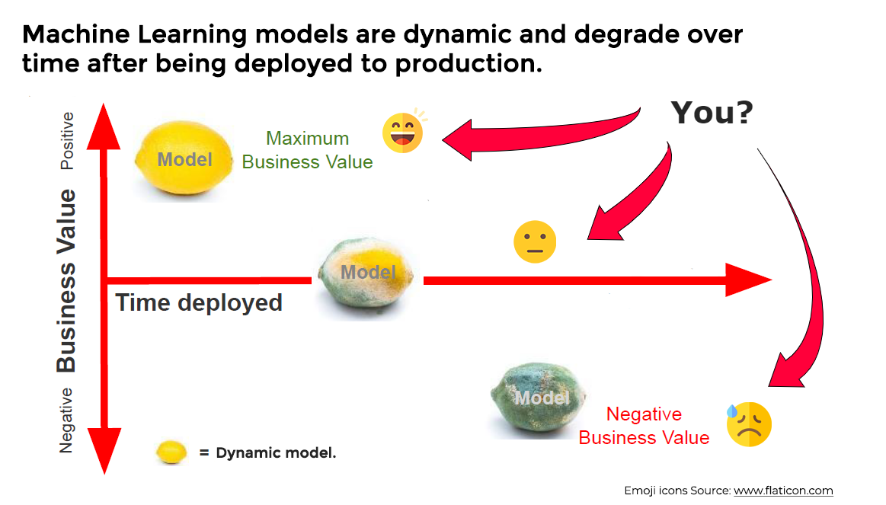
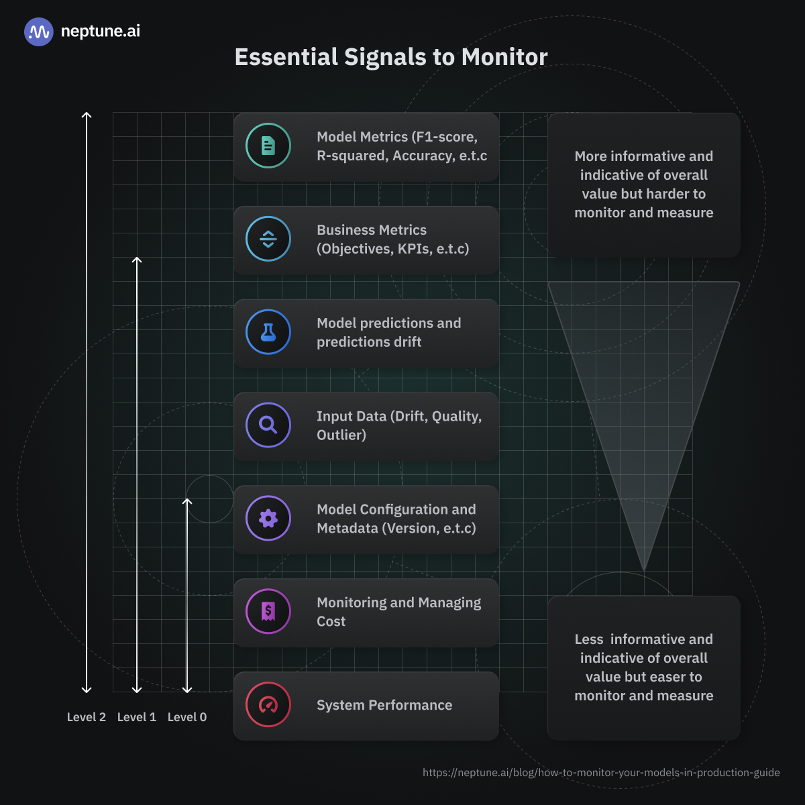
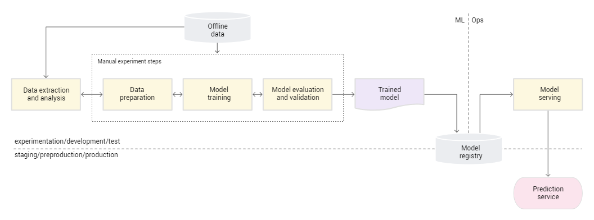
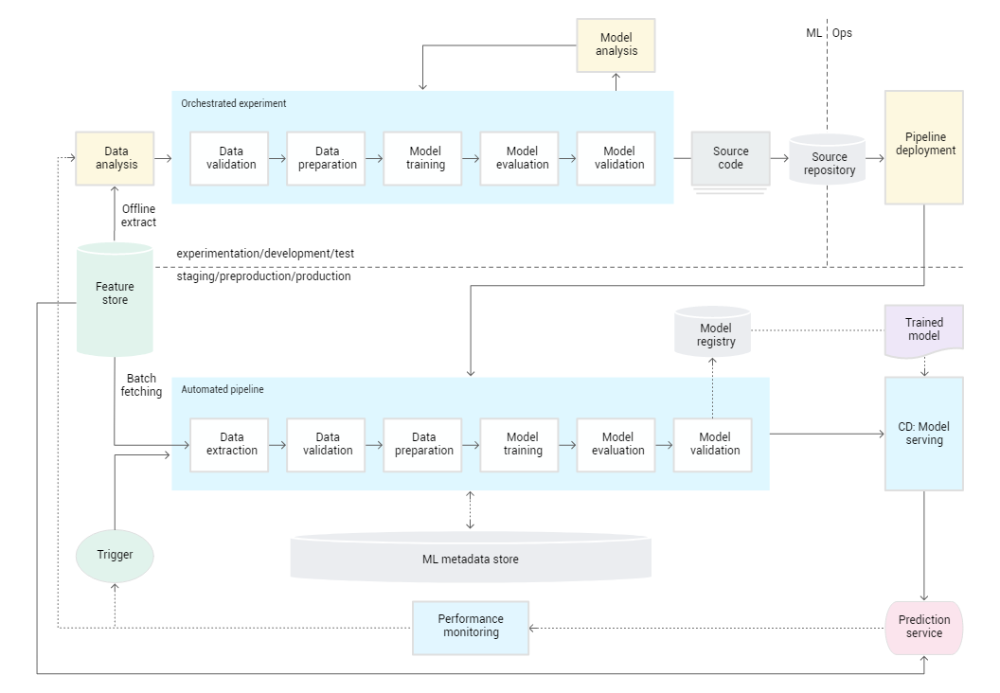
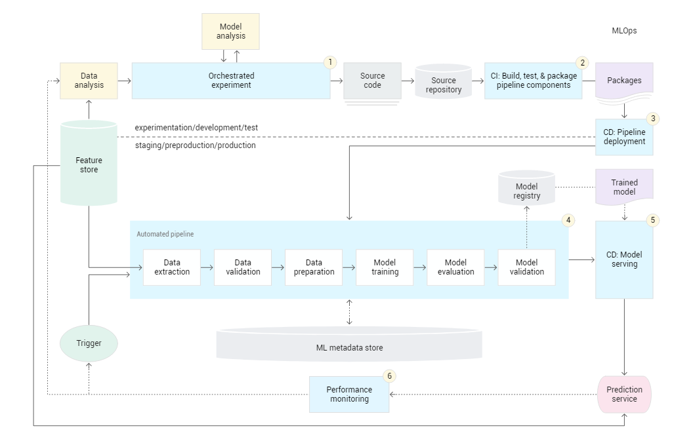

6. Overview#
How to Monitor Your Models in Production
6.1. Goal of monitoring step#

Cause:
Machine learning models degrade over time. They’re dynamic and sensitive to real changes in the real world
Validation result during development will seldom fully show the model’s performance in production
The difference of evironment between development and production, may be caused of the difference of performance
So, the Goal of monitoring model:
To detect problems with your model and the system serving your model in production before they start to generate negative business value,
To take action by triaging and troubleshooting models in production or the inputs and systems that enable them,
To ensure their predictions and results can be explained and reported,
To ensure the model’s prediction process is transparent to relevant stakeholders for proper governance,
Finally, to provide a path for maintaining and improving the model in production.
6.2. Criteria of metrics selection#
It’s very unique for each business case, depend on:
What does your business define as success and the KPIs that were set in business analysis phase ?
What were the performance expectation or result’s distribution expectation before deploying to production ?
Criteria of metrics selection to make sense and be comfortable
Availabel to compare across models
Simple and easy to understand
Can be collected/computed in real-time
Allows to set threshold for actionable alerting on problems.
For example of metrics that use for building a loan approval system:
What is the accuracy of model prediction that pay back at stipulated time ? (Functional level monitoring)
How fast does model score is returned after get the request from client ? (Operational level monitoring)
6.3. Type of monitoring#
Functional level monitoring
Data (input data level)
Data quality issues
Data/feature drift
Outliers
Model
Monitoring model drift
Model configuration and artifacts
Model versions
Concerted adversaries
Predictions (Output)
Model evaluation metrics
When availabel have Y true (the ground truth) ?
When not availabel have Y true ?
Operational level monitoring
System performance monitoring for ML models in production
System performance metrics
CPU/GPU utilization
Memory utilization
Total number of
failed requestTotal number of
API callsResponce time
System reliability
Pipelines
Data pipelines
Model pipeline
Cost
Challenges might be met when monitoring
At input level:
Data sources in production may be scattered and unreliable
Do not have clear data requirements
Data sources don’t have defined ownership
Metadata for your production data workflow is not discoverable
Teamwork
Model quality
Ground truth (y_true) are not availability
Model bias
Blackbox model
Tracking hyper-parameter
6.4. Stage of monitoring model#

6.4.1. Level 0: training and deploying models manually#

At this stage, you probably aren’t even thinking of monitoring your model yet, perhaps just finding a way to validate your model on the test set and hand it off to your IT Ops or software developers to deploy.
I know because I was there. I celebrated when I handed it off, as mentioned at the beginning of this article, but as you know—a couple of months later—it has indeed ended in tears and on the hospital bed.
For you to avoid this scenario, I propose you prioritize the lowest hanging fruit. Although less informative, and won’t help you monitor model performance, it can still serve as a reasonable performance proxy to tell you if your general application is working as intended.
You don’t want to spend long hours focusing on monitoring your model’s metrics or try to justify its performance in line with a business KPI when your workflow is still in its manual deployment stage; such metrics will get easier to measure and analyze when your MLOps system gets mature, and you can collect ground truth labels or integrate other performance proxies in the absence of ground truth.
6.4.2. Level 1: continuous training of models#

Being at this level means that you have automated the machine learning pipeline to enable continuous training of your machine learning models based on triggers that have been set by criteria or a defined threshold.
At this stage, I reckon you focus more on monitoring:
The business metric used to gauge your model’s performance (see “What Could Go Right” section)—if it doesn’t turn out to be pretty difficult to measure, especially if you can’t spend them on getting ground truth for monitoring model metrics.
The properties of your production data and your model’s performance in production to detect model staleness and degradation; can help with continuous training through triggers that automate the ML production pipelines to retrain models with new production data.
Your model’s retraining process needs to log pipeline metadata, model configuration, and model metadata because you’re most likely going to manually deploy a retrained model, and you want to make sure you can monitor the properties of that model before redeploying it to production.
You also need to monitor your production pipeline health as retraining steps are automated, and your data pipeline validates and preprocesses data from one or more sources.
You should also start monitoring how much your continuous training process is incurring so you don’t wake up with a gigantic AWS bill one day that you or your company did not plan for.
6.4.3. Level 2: completely mature in your MLOps#

Being at this level indicates that you’re completely mature in your MLOps implementation and pretty much the entire pipeline is a robust, automated CI/CD system. Your training, validation, and deployment phases are all automated in a complimentary feedback loop.
At this stage, you should pretty much monitor everything but your team’s focus should be on the more informative metrics, making sure that all the relevant stakeholders are empowered with the more informative metrics before spending more time on the least informative metrics.
6.5. Best practices for monitoring#
General monitoring best practices
Focus on people first. If you build a culture where data is also treated as the product in your organization, people will most likely be inclined to take ownership of the product to ensure it serves its intended purpose end-to-end. You can learn a lot from DevOps cultural change.
If it’s possible, don’t give the application’s “monitoring power” to one person. If you have a cross-functional team of data professionals and Ops engineers, let everyone handle their service and communicate effectively. This will help decentralize knowledge and know-how and when the use cases scale, no one will be overwhelmed.
Take a lean approach; using too many tools can be very tasking. Centralize your tools but decentralize the team; everyone staying on top of a task.
Monitoring doesn’t start after deployment, it starts when you begin experimentation. Build a culture of monitoring right from the model development stage (monitoring model experimentation metrics, logs, and so on).
Always consider what’s optimal for the productivity of your team when you encounter any crucial decision-making point.
Encourage your team to properly document their troubleshooting framework and create a framework for going from alerting to action to troubleshooting for effective model maintenance.
Best practices for data monitoring
Batch and streaming data should be processed in the same manner, using the same pipeline so that issues with the data pipeline are a lot more intuitive to troubleshoot.
Ensure you go beyond checking for the drift for an entire dataset and look gradually at the feature drift as that can provide more insights.
Invest in a global data catalog that can help log high-quality metadata for your data that every user (your data and ML team) can rely on; it will help you tackle - challenges with streaming and maintaining reliable data quality. It will also make lineage tracking easier.
Perform a pre-launch validation on your evaluation set before moving your model to production to establish a baseline performance.
Best practices for model monitoring
Model performance will inevitably degrade over time, but beware of a big dip in performance which is often indicative of something wrong—you can select tools that detect this automatically.
Perform shadow deployment and testing with the challenger model vs the champion model and log the predictions so that performance on the new model can be tracked alongside the current model in production; before you decide to deploy the newly trained (challenger) model.
You can use a metadata store (like Neptune.ai) to store hyperparameters for models that have been versioned and retrained in production; this improves auditing, compliance, lineage traceability, and troubleshooting.
Best practices for monitoring predictions/output
Prediction drift can be a good performance proxy for model metrics, especially when ground truth isn’t available to collect, but it shouldn’t be used as the sole metric.
Track unreasonable outputs from your model. For example, your classification model predicting the wrong class for a set of inputs with a high confidence score, or your regression model predicting a negative score (when the base metric score should be 0) for a given set of features.
6.6. Bonus contents#
6.6.1. Monitoring vs Observability#
Observability is your ability to look at the metrics you’ve been monitoring and perform root-cause analysis on them to understand why they are a certain way, and what threat they pose to the overall performance of your system—all to improve system quality.
Monitoring is pretty much everything that happens before observability:
Collecting performance metrics,
tracking them,
detecting potential problems,
alerting the right user.
To put it simply, you can monitor without observing, but can’t observe your system’s overall performance without monitoring it. Monitoring is about collecting the dots, observability is about connecting them!
6.6.2. Setting alerts the right way#
Test your alerts before they go into production
Monitor the primary metrics as concluded in your needs analysis.
Agree on the media for the alert, so every service owner is comfortable with their medium (email, stack,…)
Send context to the alert by including descriptive information and action by the primary service owner.
Make sure to set up a feedback loop that makes your monitoring better.